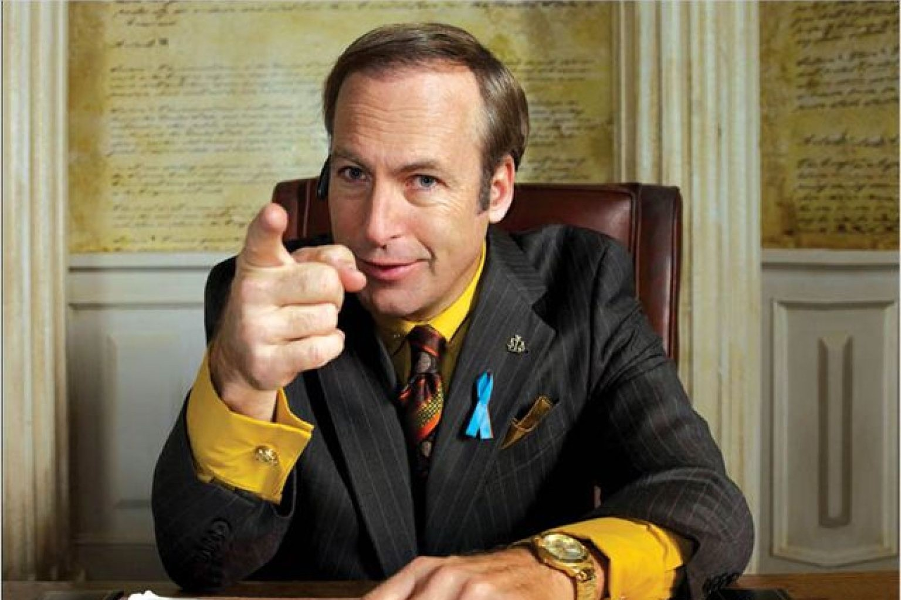
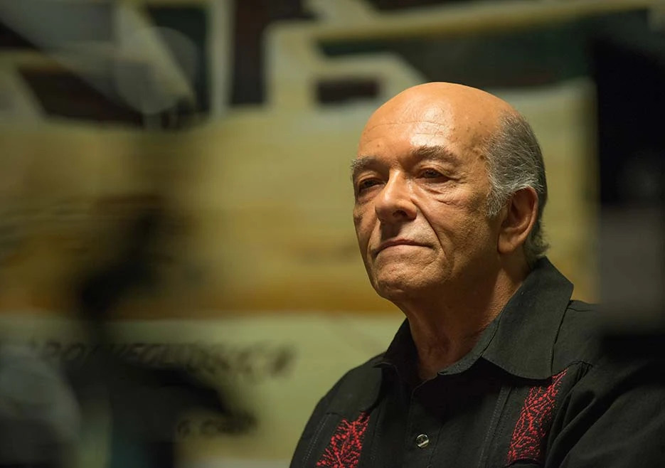

Synopsis :
Six ans avant de croiser le chemin de Walter White, Saul Goodman, connu sous le nom de Jimmy McGill, est un avocat qui peine à joindre les deux bouts, à Albuquerque, au Nouveau-Mexique. Pour boucler ses fins de mois, il n'aura d'autres choix que se livrer à quelques petites escroqueries. Chemin faisant, il va faire des rencontres qui vont se révéler déterminantes dans son parcours : Nacho Varga, ou encore Mike Ehrmantraut, un criminel spécialisé dans le "nettoyage", qui deviendra son futur homme de main.
Saul Goodman

Kim Wisler

Hector Salamanca
